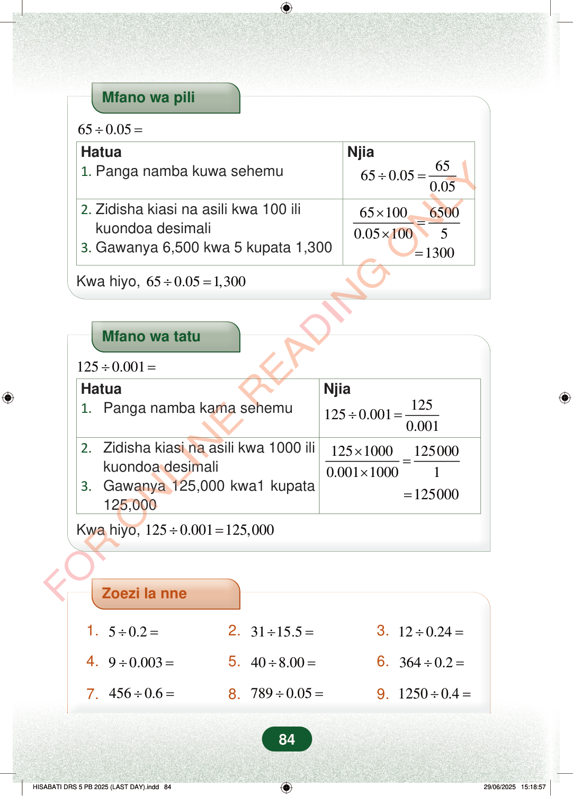

Mfano wa pili650.05÷=Hatua1.Panga namba kuwa sehemuNjia65650.050.05÷=6510065000.051005×=×2.Zidisha kiasi na asili kwa 100 ilikuondoa desimali3.Gawanya 6,500 kwa 5 kupata 1,3001300=Kwa hiyo,650.051,300÷=Mfano wa tatu1250.001÷=Hatua1.Panga namba kama sehemuNjia1251250.0010.001÷=12510001250000.00110001×=×125000=2.Zidisha kiasi na asili kwa 1000 ilikuondoa desimali3.Gawanya 125,000 kwa1 kupata125,000Kwa hiyo,1250.001125,000÷=Zoezi la nne1.50.2÷=2.3115.5÷=3.120.24÷=4.90.003÷=5.408.00÷=6.3640.2÷=7.4560.6÷=8.7890.05÷=9.12500.4÷=84
Mfano wa pili
65 0.05 ÷ =
Hatua 1. Panga namba kuwa sehemu Njia
65 65 0.05 0.05 ÷ =
65 100 6500 0.05 100 5 × = ×
2. Zidisha kiasi na asili kwa 100 ili kuondoa desimali 3. Gawanya 6,500 kwa 5 kupata 1,300
1300 =
Kwa hiyo, 65 0.05 1,300 ÷ =
Mfano wa tatu
125 0.001 ÷ =
Hatua 1. Panga namba kama sehemu Njia
125 125 0.001 0.001 ÷ =
125 1000 125000 0.001 1000 1 × = ×
125000 =
2. Zidisha kiasi na asili kwa 1000 ili kuondoa desimali 3. Gawanya 125,000 kwa1 kupata 125,000
Kwa hiyo, 125 0.001 125,000 ÷ =
Zoezi la nne
1. 5 0.2 ÷ = 2. 31 15.5 ÷ = 3. 12 0.24 ÷ =
4. 9 0.003 ÷ = 5. 40 8.00 ÷ = 6. 364 0.2 ÷ =
7. 456 0.6 ÷ = 8. 789 0.05 ÷ = 9. 1250 0.4 ÷ =
84
Mfano wa pili unaonyesha 65 ÷ 0.05. Hatua zinaonyesha kuondoa desimali kwa kuzidisha kwa 100, kisha kupata jibu 1,300.Mfano wa pili<math><mrow><mn>65</mn><mo>÷</mo><mn>0.05</mn><mo>=</mo></mrow></math>HatuaNjia1. Panga namba kuwa sehemu<math><mrow><mn>65</mn><mo>÷</mo><mn>0.05</mn><mo>=</mo><mstyle displaystyle="true" scriptlevel="0"><mfrac><mn>65</mn><mn>0.05</mn></mfrac></mstyle></mrow></math>2. Zidisha kiasi na asili kwa 100 ili kuondoa desimali3. Gawanya 6,500 kwa 5 kupata 1,300<math><mrow><mstyle displaystyle="true" scriptlevel="0"><mfrac><mrow><mn>65</mn><mo>×</mo><mn>100</mn></mrow><mrow><mn>0.05</mn><mo>×</mo><mn>100</mn></mrow></mfrac></mstyle><mo>=</mo><mstyle displaystyle="true" scriptlevel="0"><mfrac><mn>6500</mn><mn>5</mn></mfrac></mstyle></mrow></math>= 1300Kwa hiyo, 65 ÷ 0.05 = 1,300Mfano wa tatu unaonyesha 125 ÷ 0.001. Hatua zinaonyesha kuondoa desimali kwa kuzidisha kwa 1000, kisha kupata jibu 125,000.Mfano wa tatu<math><mrow><mn>125</mn><mo>÷</mo><mn>0.001</mn><mo>=</mo></mrow></math>HatuaNjia1. Panga namba kama sehemu<math><mrow><mn>125</mn><mo>÷</mo><mn>0.001</mn><mo>=</mo><mstyle displaystyle="true" scriptlevel="0"><mfrac><mn>125</mn><mn>0.001</mn></mfrac></mstyle></mrow></math>2. Zidisha kiasi na asili kwa 1000 ili kuondoa desimali3. Gawanya 125,000 kwa1 kupata 125,000<math><mrow><mstyle displaystyle="true" scriptlevel="0"><mfrac><mrow><mn>125</mn><mo>×</mo><mn>1000</mn></mrow><mrow><mn>0.001</mn><mo>×</mo><mn>1000</mn></mrow></mfrac></mstyle><mo>=</mo><mstyle displaystyle="true" scriptlevel="0"><mfrac><mn>125000</mn><mn>1</mn></mfrac></mstyle></mrow></math>= 125000Kwa hiyo, 125 ÷ 0.001 = 125,000Zoezi la nne lina maswali tisa ya kugawa namba za desimali, kama 5 ÷ 0.2, 31 ÷ 15.5, na 1250 ÷ 0.4.Zoezi la nne1.5 ÷ 0.2 =2.31 ÷ 15.5 =3.12 ÷ 0.24 =4.9 ÷ 0.003 =5.40 ÷ 8.00 =6.364 ÷ 0.2 =7.456 ÷ 0.6 =8.789 ÷ 0.05 =9.1250 ÷ 0.4 =